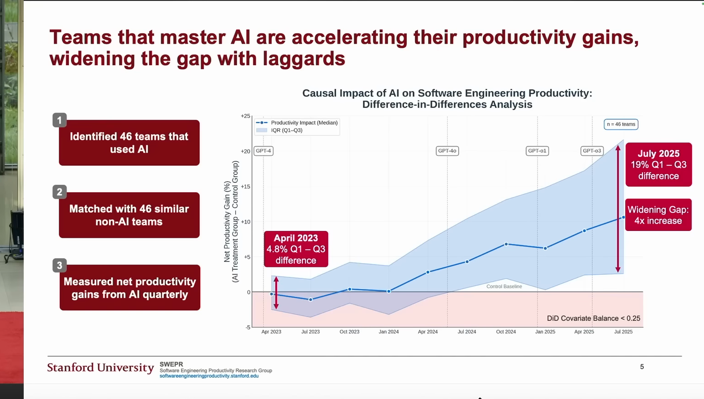
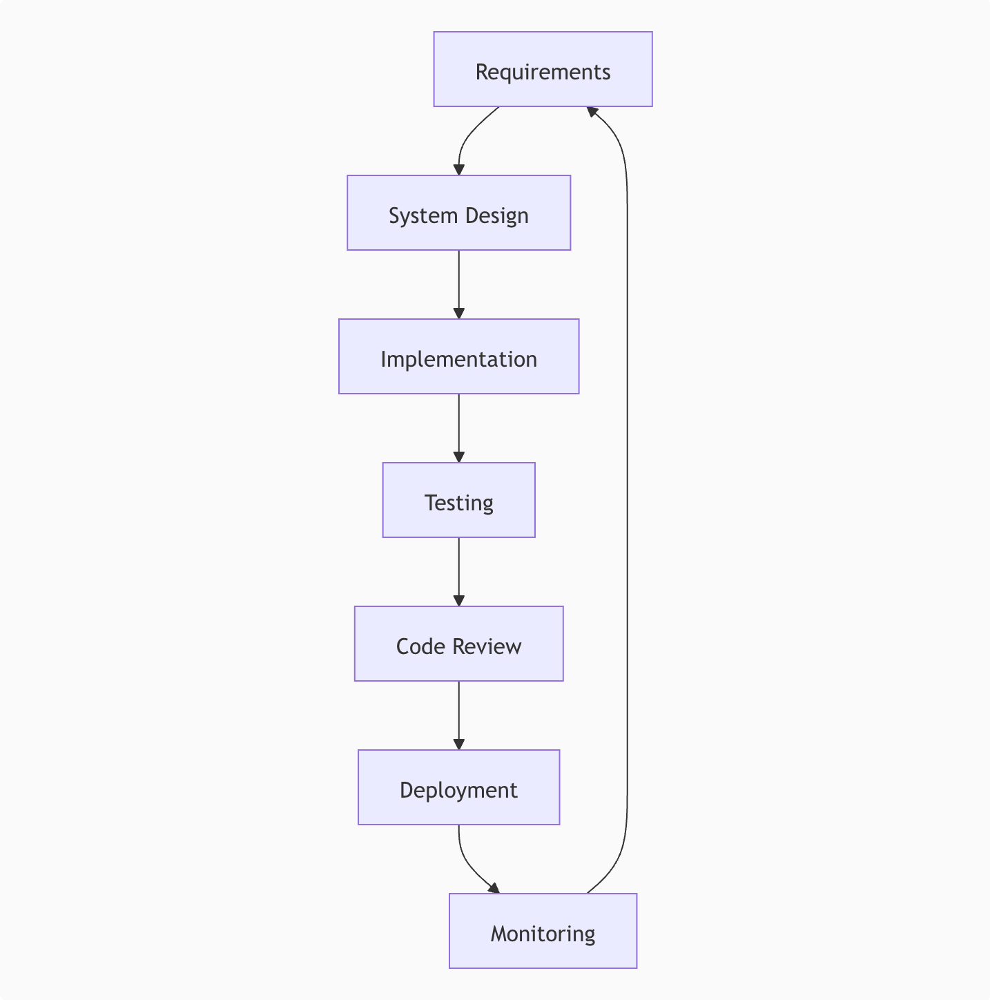
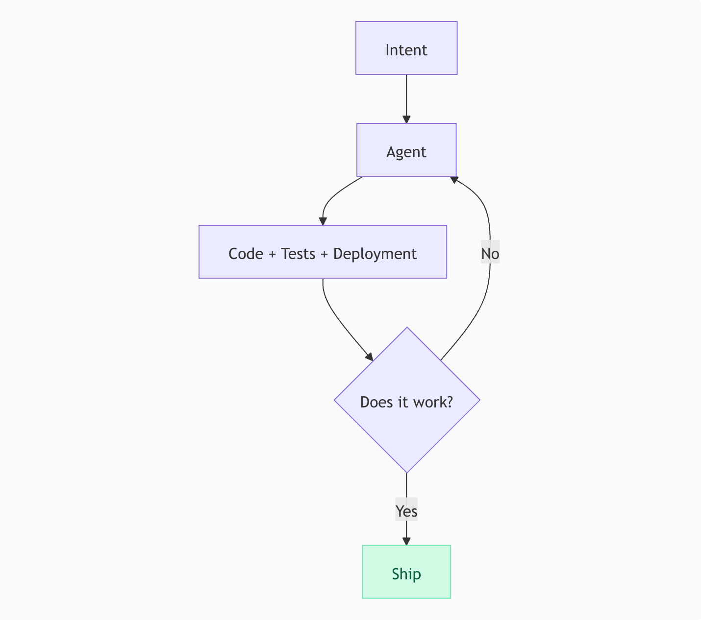
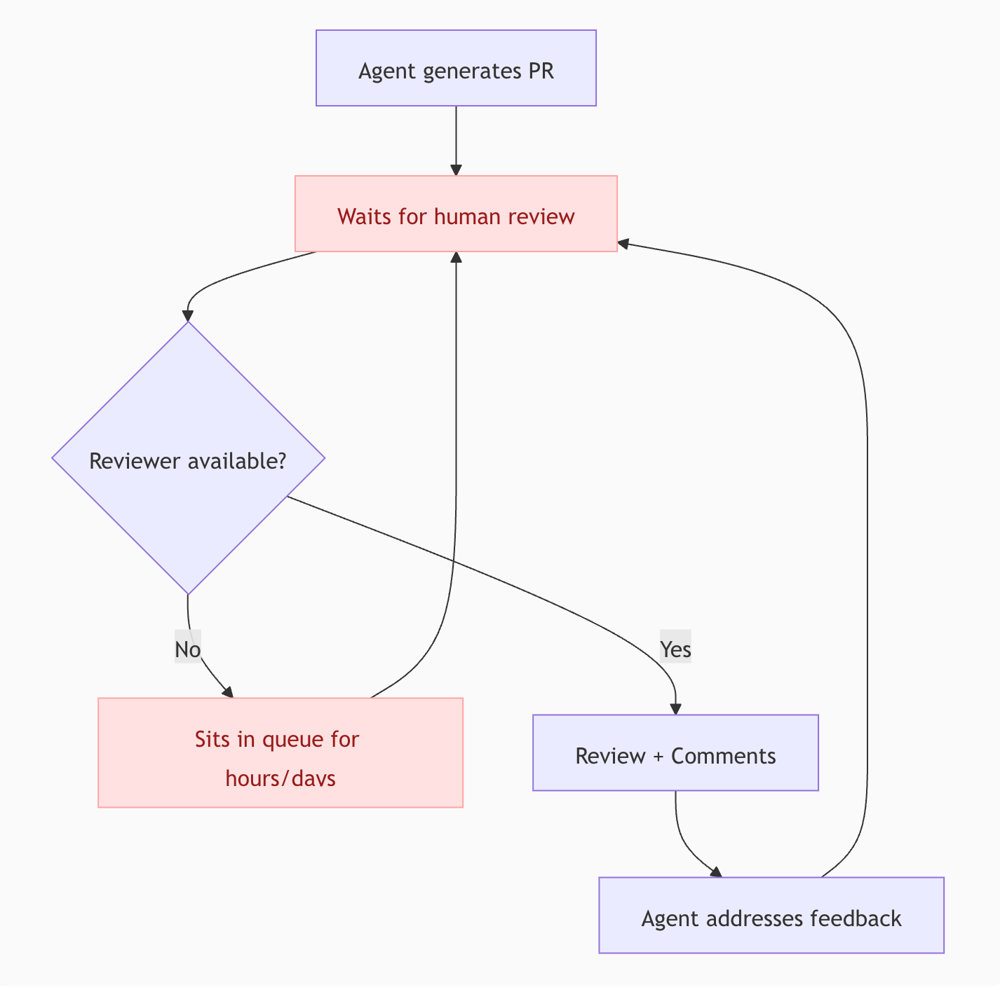
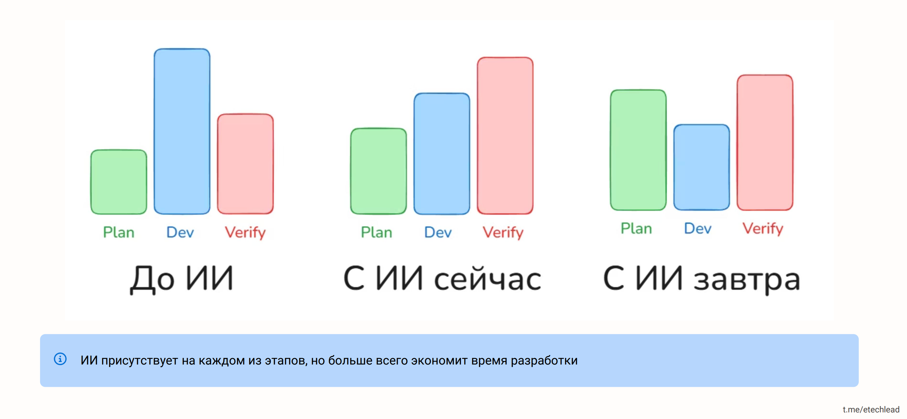
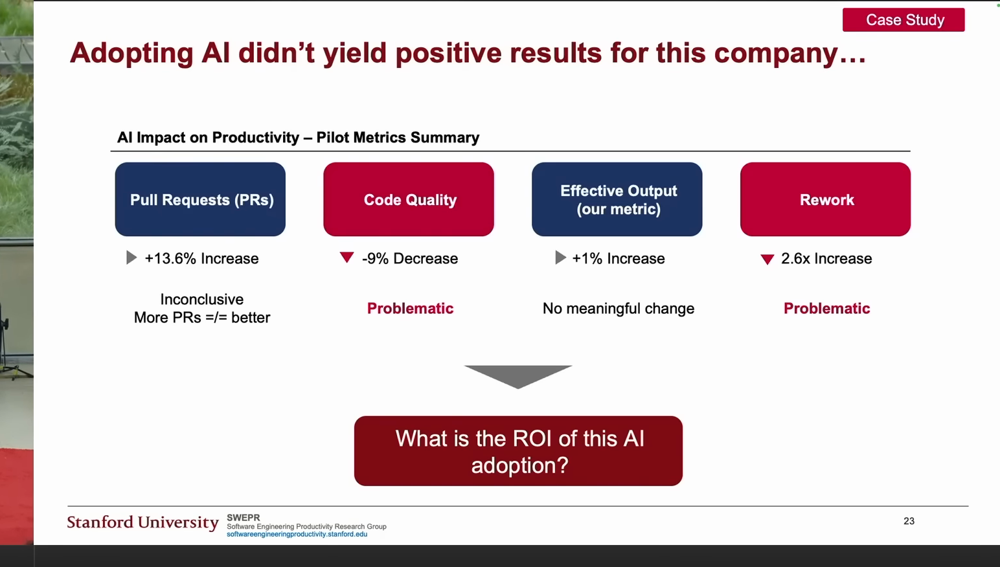
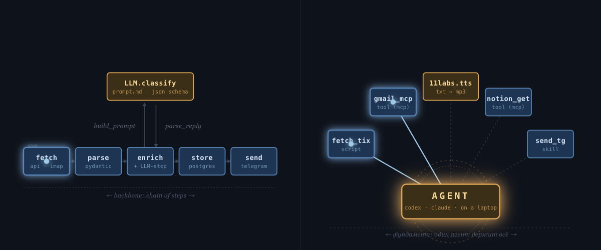

<!DOCTYPE html>
<html lang="ru">
<head>
  <meta charset="UTF-8">
  <meta name="viewport" content="width=device-width, initial-scale=1.0">
  <title>AI-native SDLC. Грабли, на которые почти все наступают</title>

  <link rel="preconnect" href="https://fonts.googleapis.com">
  <link rel="preconnect" href="https://fonts.gstatic.com" crossorigin>
  <link href="https://fonts.googleapis.com/css2?family=Syne:wght@600;700;800&family=Outfit:wght@300;400;500;600&family=IBM+Plex+Mono:ital,wght@0,400;0,500;1,400&display=swap" rel="stylesheet">

  <script src="https://cdn.tailwindcss.com"></script>
  <script>
    tailwind.config = {
      theme: {
        extend: {
          fontFamily: {
            display: ['Syne', 'sans-serif'],
            body: ['Outfit', 'sans-serif'],
            mono: ['IBM Plex Mono', 'monospace'],
          },
          colors: {
            bg: '#08090d',
            surface: '#13151b',
            border: '#252833',
            accent: '#ef5a3c',
            muted: '#adb2bf',
            dim: '#6f7788',
          },
          boxShadow: {
            glow: '0 0 48px rgba(239, 90, 60, 0.18)',
          }
        }
      }
    };
  </script>

  <script crossorigin src="https://unpkg.com/react@18/umd/react.production.min.js"></script>
  <script crossorigin src="https://unpkg.com/react-dom@18/umd/react-dom.production.min.js"></script>
  <script src="https://unpkg.com/@babel/standalone/babel.min.js"></script>

  <style>
    * { margin: 0; padding: 0; box-sizing: border-box; }
    html, body, #root { width: 100vw; height: 100vh; overflow: hidden; background: #08090d; }
    body {
      font-family: 'Outfit', sans-serif;
      color: #f8fafc;
      -webkit-font-smoothing: antialiased;
      font-variant-numeric: lining-nums;
      font-feature-settings: "lnum" 1;
      background:
        radial-gradient(900px 620px at 82% -15%, rgba(239, 90, 60, 0.10), transparent 68%),
        radial-gradient(760px 520px at -12% 100%, rgba(64, 94, 191, 0.12), transparent 64%),
        #08090d;
    }

    .font-display {
      font-variant-numeric: lining-nums;
      font-feature-settings: "lnum" 1;
    }

    .font-mono,
    .slide-counter,
    ol.slide-ol > li::before {
      font-variant-numeric: lining-nums tabular-nums;
      font-feature-settings: "lnum" 1, "tnum" 1;
    }

    .stage {
      position: fixed;
      inset: 0;
      background: #08090d;
      overflow: hidden;
    }
    .slide-frame {
      position: absolute;
      left: 50%;
      top: 50%;
      width: 1280px;
      height: 800px;
      transform: translate(-50%, -50%) scale(var(--slide-scale, 1));
      transform-origin: center center;
    }

    .slide-enter { animation: slideIn 0.38s cubic-bezier(0.16, 1, 0.3, 1) forwards; }
    @keyframes slideIn {
      from { opacity: 0; transform: translateY(10px) scale(0.992); }
      to { opacity: 1; transform: translateY(0) scale(1); }
    }

    .glass {
      background: linear-gradient(180deg, rgba(19, 21, 27, 0.72), rgba(19, 21, 27, 0.48));
      border: 1px solid rgba(37, 40, 51, 0.85);
      backdrop-filter: blur(12px);
    }

    .accent-line {
      width: 58px;
      height: 3px;
      border-radius: 999px;
      background: linear-gradient(90deg, #ef5a3c, #ff8c70);
    }

    ul.slide-list > li {
      position: relative;
      padding-left: 1.45rem;
    }
    ul.slide-list > li::before {
      content: '';
      position: absolute;
      left: 0;
      top: 0.65em;
      width: 7px;
      height: 7px;
      border-radius: 50%;
      background: #ef5a3c;
      box-shadow: 0 0 0 4px rgba(239, 90, 60, 0.16);
    }

    ul.slide-list-sm > li {
      position: relative;
      padding-left: 1.1rem;
    }
    ul.slide-list-sm > li::before {
      content: '';
      position: absolute;
      left: 0;
      top: 0.6em;
      width: 5px;
      height: 5px;
      border-radius: 50%;
      background: #ef5a3c;
      box-shadow: 0 0 0 3px rgba(239, 90, 60, 0.12);
    }

    ol.slide-ol {
      list-style: none;
      counter-reset: step;
    }
    ol.slide-ol > li {
      counter-increment: step;
      position: relative;
      padding-left: 2.7rem;
    }
    ol.slide-ol > li::before {
      content: counter(step);
      position: absolute;
      left: 0;
      top: -0.05em;
      font-family: 'Syne', sans-serif;
      font-size: 1.15em;
      font-weight: 700;
      color: #ef5a3c;
    }

    ol.slide-ol-from-5 { counter-reset: step 4; }
    ol.slide-ol-from-5 > li::before { content: counter(step); }

    .speaker-layout {
      width: 100%;
      display: flex;
      align-items: stretch;
      gap: 3.5rem;
    }
    .speaker-layout-main {
      flex: 1 1 auto;
      min-width: 0;
      display: flex;
      flex-direction: column;
      justify-content: space-between;
    }
    .speaker-photo-wrap {
      flex: 0 0 260px;
      margin-left: auto;
    }
    .speaker-photo-wrap img {
      width: 100%;
      height: auto;
      max-width: 260px;
    }

    @media (max-width: 1200px) {
      .speaker-layout { gap: 2rem; }
      .speaker-photo-wrap { flex-basis: 220px; }
      .speaker-photo-wrap img { max-width: 220px; }
    }

    @page {
      size: landscape;
      margin: 0;
    }
    @media print {
      html, body, #root {
        width: auto;
        height: auto;
        overflow: visible;
        background: #08090d !important;
      }
      body {
        -webkit-print-color-adjust: exact;
        print-color-adjust: exact;
        color-adjust: exact;
      }
      * {
        -webkit-print-color-adjust: exact;
        print-color-adjust: exact;
      }
      .glass {
        background: #1a1c24 !important;
        border: 1px solid #252833 !important;
        backdrop-filter: none !important;
        -webkit-backdrop-filter: none !important;
      }
      .screen-only { display: none !important; }
      .print-only { display: block !important; }
      .print-slide {
        width: 100vw;
        height: 100vh;
        min-height: 100vh;
        page-break-after: always;
        break-after: page;
        overflow: hidden;
        background: #08090d !important;
      }
      .print-slide > * {
        width: 100% !important;
        height: 100% !important;
      }
      .print-slide:last-child {
        page-break-after: avoid;
        break-after: avoid;
      }
    }
    @media screen {
      .print-only { display: none !important; }
    }
  </style>
</head>
<body>
  <div id="root"></div>

  <script type="text/babel">
    const { useState, useEffect, useCallback } = React;

    function Slide({ children, className = '', contentClassName = '' }) {
      return (
        <div className={`relative w-full h-full px-56 py-14 flex flex-col justify-center ${className}`}>
          <div className={`w-full max-w-[1152px] mx-auto ${contentClassName}`}>
            {children}
          </div>
        </div>
      );
    }

    function TitleSlide({ title, subtitle }) {
      return (
        <Slide className="items-center text-center">
          <div className="w-full flex flex-col items-center">
            <h1 className="font-display text-6xl font-800 tracking-tight leading-tight max-w-5xl">
              {title}
            </h1>
            {subtitle && (
              <p className="font-body text-2xl text-muted mt-8 max-w-4xl leading-relaxed">
                {subtitle}
              </p>
            )}
          </div>
        </Slide>
      );
    }

    function H2({ children }) {
      return (
        <div className="mb-9 max-w-5xl mx-auto w-full">
          <h2 className="font-display text-5xl font-700 tracking-tight leading-tight">{children}</h2>
        </div>
      );
    }

    function H3({ children }) {
      return (
        <h3 className="font-display text-3xl font-700 tracking-tight mb-5 max-w-5xl mx-auto w-full">{children}</h3>
      );
    }

    function HistoricalTimeline({ active }) {
      const steps = ['Июль', 'Август', 'Декабрь', 'Март'];
      const pct = (active / (steps.length - 1)) * 100;
      return (
        <div className="absolute left-16 top-1/2 h-[380px] w-28 -translate-y-1/2">
          <div className="relative h-full">
            <div className="absolute left-[5px] top-[6px] bottom-[6px] w-[2px] bg-border" />
            <div className="absolute left-[5px] top-[6px] w-[2px] bg-accent transition-all duration-500" style={{ height: `calc((100% - 12px) * ${pct / 100})` }} />
            <div className="relative z-10 flex h-full flex-col justify-between">
              {steps.map((step, i) => (
                <div key={step} className="flex items-center gap-3">
                  <div className={`h-3 w-3 rounded-full border-2 ${i <= active ? 'border-accent bg-accent shadow-[0_0_18px_rgba(239,90,60,0.42)]' : 'border-border bg-bg'}`} />
                  <span className={`font-mono text-xs ${i <= active ? 'text-[#dbe0ea]' : 'text-dim'}`}>{step}</span>
                </div>
              ))}
            </div>
          </div>
        </div>
      );
    }

    function Panel({ children, className = '' }) {
      return (
        <div className={`glass rounded-2xl p-8 ${className}`}>
          {children}
        </div>
      );
    }

    function SmallPanel({ children, className = '' }) {
      return (
        <div className={`glass rounded-xl p-5 ${className}`}>
          {children}
        </div>
      );
    }

    function Solution({ children }) {
      const [open, setOpen] = useState(false);
      return (
        <div className="glass rounded-2xl mt-6 overflow-hidden transition-all" data-solution-open={open ? 'true' : 'false'}>
          <button
            onClick={() => setOpen(o => !o)}
            className="w-full flex items-center justify-between gap-4 px-8 py-5 text-left hover:bg-[rgba(74,222,128,0.04)] transition-colors"
          >
            <span className="font-display text-lg text-[#4ade80]">Решение</span>
            <span className={`font-mono text-xl text-[#4ade80] transition-transform ${open ? 'rotate-45' : ''}`}>+</span>
          </button>
          <div className={`grid transition-all duration-300 ease-out ${open ? 'grid-rows-[1fr] opacity-100' : 'grid-rows-[0fr] opacity-0'}`}>
            <div className="overflow-hidden">
              <div className="px-8 pb-7 font-body text-xl text-[#dbe0ea] leading-relaxed">
                {children}
              </div>
            </div>
          </div>
        </div>
      );
    }

    function ProgressBar({ current, total }) {
      const pct = ((current + 1) / total) * 100;
      return (
        <div className="fixed bottom-0 left-0 w-full h-[2px] bg-border z-50">
          <div className="h-full bg-accent transition-all duration-500 ease-out" style={{ width: `${pct}%` }} />
        </div>
      );
    }

    const slides = [
      // 1. Presentation QR
      () => (
        <Slide contentClassName="flex flex-col items-center justify-center gap-6">
          <a href="https://slides.grably.tech/devfest/" target="_blank" rel="noopener noreferrer" className="group flex flex-col items-center gap-6">
            <div className="rounded-[20px] bg-white p-4 shadow-[0_0_80px_rgba(239,90,60,0.28)] ring-1 ring-white/10 transition-transform group-hover:-translate-y-1">
              
            </div>
            <p className="font-body text-2xl text-muted text-center leading-snug transition-colors group-hover:text-accent">Презентация<br/>со ссылками</p>
          </a>
        </Slide>
      ),

      // 1. Speaker intro
      () => (
        <Slide>
          <div className="max-w-6xl mx-auto speaker-layout">
            <div className="speaker-layout-main">
              <h1 className="font-display text-4xl font-700 tracking-tight leading-tight max-w-5xl">
                AI-native SDLC:<br/>
                Грабли, на которые почти все наступают
              </h1>
              <div>
                <p className="font-display text-3xl font-700 tracking-tight text-muted mb-5">
                  Николай Шейко
                </p>
                <ul className="slide-list space-y-5 font-body text-xl text-[#dbe0ea] leading-relaxed max-w-4xl">
                  <li>Кастомная ИИ разработка: <a href="https://grably.tech" target="_blank" rel="noopener noreferrer" className="text-accent font-mono hover:text-[#ff8c70] transition-colors">grably.tech</a></li>
                  <li>Топовые онлайн конфы по ИИ: <a href="https://entropy.talk" target="_blank" rel="noopener noreferrer" className="text-accent font-mono hover:text-[#ff8c70] transition-colors">entropy.talk</a></li>
                  <li>Курс по агентам: <a href="https://aiforwork.courses" target="_blank" rel="noopener noreferrer" className="text-accent font-mono hover:text-[#ff8c70] transition-colors">aiforwork.courses</a></li>
                  <li>Личный опыт, факапы, туториалы: <a href="https://t.me/ai_grably" target="_blank" rel="noopener noreferrer" className="text-accent font-mono hover:text-[#ff8c70] transition-colors">@ai_grably</a></li>
                </ul>
              </div>
            </div>
            <div className="speaker-photo-wrap">
              
              <a href="https://t.me/ai_grably" target="_blank" rel="noopener noreferrer" className="flex items-center gap-3 mt-4 px-4 py-3 rounded-2xl border border-border bg-[rgba(0,0,0,0.18)] hover:border-accent/40 hover:bg-[rgba(0,0,0,0.26)] transition-all" style={{maxWidth: 340}}>
                <div className="w-9 h-9 rounded-full border border-border bg-[rgba(0,0,0,0.25)] overflow-hidden flex-shrink-0">
                  
                </div>
                <div className="min-w-0">
                  <p className="font-body text-sm font-500 text-[#f8fafc]">AI и грабли</p>
                  <p className="font-mono text-xs text-dim truncate">t.me/ai_grably</p>
                </div>
                <div className="ml-auto w-9 h-9 rounded-full border border-accent/30 bg-gradient-to-br from-accent/20 to-accent/10 flex items-center justify-center flex-shrink-0">
                  <svg viewBox="0 0 24 24" className="w-[18px] h-[18px] fill-[rgba(255,255,255,0.88)]">
                    <path d="M9.04 15.47 8.7 20.3c.49 0 .7-.21.95-.46l2.28-2.18 4.72 3.46c.86.48 1.47.23 1.7-.8l3.08-14.45v-.01c.29-1.29-.47-1.8-1.3-1.5L1.96 9.02c-1.25.49-1.23 1.19-.22 1.5l4.71 1.47L17.4 5.2c.52-.34 1-.15.6.2L9.04 15.47Z" />
                  </svg>
                </div>
              </a>
            </div>
          </div>
        </Slide>
      ),

      // 2. План
      () => (
        <Slide>
          <H2>План</H2>
          <ol className="slide-ol space-y-5 font-body text-2xl text-[#dbe0ea] max-w-4xl mx-auto w-full leading-relaxed">
            <li>что уже происходит с SDLC</li>
            <li>топ ошибок при внедрении ИИ</li>
            <li>лайфхаки и best-practices</li>
            <li>что ждет завтра (и как готовиться)</li>
          </ol>
        </Slide>
      ),

      // 3. Июль 2025. Исследование METR
      () => (
        <Slide contentClassName="flex flex-col items-center text-center">
          <HistoricalTimeline active={0} />
          <h2 className="font-display text-5xl font-700 tracking-tight leading-tight mb-7">Июль 2025. Исследование METR</h2>
          
          <p className="font-mono text-sm text-dim mb-6 max-w-3xl">
            <a href="https://arxiv.org/pdf/2507.09089" target="_blank" rel="noopener noreferrer" className="hover:text-accent transition-colors">
              Measuring the Impact of Early-2025 AI on Experienced Open-Source Developer Productivity
            </a>
          </p>
          <ol className="slide-ol space-y-3 font-body text-xl text-[#dbe0ea] max-w-3xl text-left">
            <li>ИИ <span className="text-accent font-600">мешает</span> в разработке</li>
            <li>А разработчики <span className="text-accent font-600">думают</span>, что помогает</li>
          </ol>
        </Slide>
      ),

      // 4. Август 2025. SWEPR
      () => (
        <Slide contentClassName="flex flex-col items-center text-center">
          <HistoricalTimeline active={1} />
          <h2 className="font-display text-5xl font-700 tracking-tight leading-tight mb-7">Август 2025. Исследование SWEPR (Stanford)</h2>
          
          <p className="font-mono text-sm text-dim mb-6 max-w-3xl">
            <a href="https://aiconference.com/wp-content/uploads/2025/09/Yegor-Denisov-Blanch-Will-AI-Replace-Software-Engineers_-.pptx.pdf" target="_blank" rel="noopener noreferrer" className="hover:text-accent transition-colors">
              Will AI Replace Software Engineers?
            </a>
          </p>
          <ol className="slide-ol space-y-3 font-body text-xl text-[#dbe0ea] max-w-3xl text-left">
            <li>На самом деле помогает</li>
            <li>Но разрыв между топ-перформерами и остальными – огромный</li>
          </ol>
        </Slide>
      ),

      // 5. Декабрь 2025
      () => (
        <Slide contentClassName="flex flex-col items-center text-center">
          <HistoricalTimeline active={2} />
          <h2 className="font-display text-5xl font-700 tracking-tight leading-tight mb-5">Декабрь 2025</h2>
          <p className="font-body text-2xl text-muted mb-7">Выход Claude Opus 4.5 и GPT-5.2</p>
          
          <p className="font-mono text-sm text-dim">
            <a href="https://x.com/karpathy/status/2026731645169185220" target="_blank" rel="noopener noreferrer" className="hover:text-accent transition-colors">
              Karpathy про декабрь
            </a>
          </p>
        </Slide>
      ),

      // 6. Март 2026. SDLC is dead (2 images)
      () => (
        <Slide contentClassName="flex flex-col items-center text-center">
          <HistoricalTimeline active={3} />
          <h2 className="font-display text-5xl font-700 tracking-tight leading-tight mb-9">Март 2026. SDLC is dead</h2>
          <div className="flex gap-6 justify-center items-center max-w-5xl w-full">
            
            
          </div>
          <p className="font-mono text-sm text-dim mt-4">
            <a href="https://boristane.com/blog/the-software-development-lifecycle-is-dead/" target="_blank" rel="noopener noreferrer" className="hover:text-accent transition-colors">Boris Tane: The Software Development Lifecycle is Dead</a>
          </p>
        </Slide>
      ),

      // 7. Март 2026. SDLC is dead – Review Curse
      () => (
        <Slide contentClassName="flex flex-col items-center text-center">
          <HistoricalTimeline active={3} />
          <h2 className="font-display text-5xl font-700 tracking-tight leading-tight mb-9">Март 2026. SDLC is dead</h2>
          
          <p className="font-display text-3xl font-700 text-accent">Review Curse</p>
        </Slide>
      ),

      // 8. Распределение времени
      () => (
        <Slide contentClassName="flex flex-col items-center text-center">
          <h2 className="font-display text-5xl font-700 tracking-tight leading-tight mb-9">Распределение времени</h2>
          
        </Slide>
      ),

      // 9. Суммируем
      () => (
        <Slide>
          <H2>Суммируем</H2>
          <ul className="slide-list space-y-6 font-body text-2xl text-[#dbe0ea] leading-relaxed max-w-4xl mx-auto w-full">
            <li>Проблемы с оценкой эффективности</li>
            <li>Объективно – результат был даже летом 2025</li>
            <li>Схлопывание этапов разработки</li>
          </ul>
        </Slide>
      ),

      // 10. Ошибка 1. Работа в синхронном режиме
      () => (
        <Slide contentClassName="flex flex-col items-center text-center">
          <h2 className="font-display text-5xl font-700 tracking-tight leading-tight mb-9">Ошибка 1. Работа в синхронном режиме</h2>
          <Panel className="max-w-3xl w-full">
            <div className="flex items-center justify-center gap-10">
              <div className="text-center">
                <p className="font-display text-2xl text-[#dbe0ea]">Developer</p>
                <p className="font-mono text-base text-muted mt-2">CPU-bound</p>
              </div>
              <p className="font-display text-2xl text-dim">vs</p>
              <div className="text-center">
                <p className="font-display text-2xl text-[#dbe0ea]">Engineering Manager</p>
                <p className="font-mono text-base text-muted mt-2">IO-bound</p>
              </div>
            </div>
          </Panel>
        </Slide>
      ),

      // 11. Кейс 1: Перенос фронтенда на новый стек
      () => (
        <Slide>
          <H2>Кейс 1. Перенос фронтенда на новый стек</H2>
          <Panel className="max-w-5xl mx-auto w-full">
            <ul className="slide-list space-y-5 font-body text-xl text-[#dbe0ea] leading-relaxed">
              <li>Компания оплачивает ИИ для команды</li>
              <li>Команда пользуется, но кто как умеет, централизованной настройки почти нет</li>
              <li>Перевозят фронт на новый стек, хотят ускорить за счёт ИИ, заодно прокачаться</li>
            </ul>
          </Panel>
        </Slide>
      ),

      // 12. Необходимое условие успеха (open question)
      () => (
        <TitleSlide title="Какое необходимое условие успеха с AI в разработке?" />
      ),

      // 13. Ошибка 2. Feedback Loop
      () => (
        <Slide>
          <H2>Ошибка 2. Feedback Loop</H2>
          <div className="max-w-5xl mx-auto w-full">
            <Panel>
              <ul className="slide-list space-y-4 font-body text-2xl text-[#dbe0ea] leading-relaxed">
                <li>Агент пишет код</li>
                <li>Тестит человек в браузере</li>
              </ul>
            </Panel>
            <Solution>Агент сравнивает старый и новый фронт</Solution>
          </div>
        </Slide>
      ),

      // 14. Ошибка 3. Слишком мало времени на планирование
      () => (
        <Slide>
          <H2>Ошибка 3. Слишком мало времени на планирование</H2>
          <div className="max-w-5xl mx-auto w-full">
            <Panel>
              <ul className="slide-list space-y-4 font-body text-xl text-[#dbe0ea] leading-relaxed">
                <li>Команда вайбкодит в режиме кранча</li>
                <li>Потом архитектурные проблемы, которые блочат разработку</li>
                <li>Код возвращается на доработку, вся продуктивность съедается</li>
              </ul>
            </Panel>
            <Solution>
              <p className="mb-3">Норма:</p>
              <ol className="slide-ol space-y-2">
                <li>Планирование занимает несколько часов</li>
                <li>Агент в один заход делает реализацию</li>
              </ol>
            </Solution>
          </div>
        </Slide>
      ),

      // 15. Ошибка 4. Устаревшие инструменты
      () => (
        <Slide>
          <H2>Ошибка 4. Использовать устаревшие инструменты</H2>
          <div className="max-w-5xl mx-auto w-full">
            <Panel>
              <ul className="slide-list space-y-4 font-body text-2xl text-[#dbe0ea] leading-relaxed">
                <li>Используют Cursor</li>
                <li>Платят за токены</li>
              </ul>
            </Panel>
            <Solution>Codex / Claude Code</Solution>
          </div>
        </Slide>
      ),

      // 16. Первые попытки
      () => (
        <Slide>
          <H2>Первые попытки</H2>
          <ul className="slide-list space-y-6 font-body text-2xl text-[#dbe0ea] leading-relaxed max-w-4xl mx-auto w-full">
            <li>Cursor → Claude Code</li>
            <li>Опросник для команды (для CLAUDE.md)</li>
            <li>Замыкание Feedback Loop (линтер, typescript, тесты, playwright)</li>
            <li>Участие в синках, корректировка решений команды</li>
          </ul>
        </Slide>
      ),

      // 17. Что могло пойти не так? Ошибка 5. Делать внутренние инструменты внешнему эксперту
      () => (
        <Slide>
          <div className="mb-9 max-w-5xl mx-auto w-full">
            <p className="font-body text-xl italic text-muted mb-3">Что могло пойти не так?</p>
            <h2 className="font-display text-4xl font-700 tracking-tight leading-tight">Ошибка 5. Делать внутренние инструменты внешнему эксперту</h2>
          </div>
          <div className="space-y-6 max-w-5xl mx-auto w-full">
            <Panel>
              <p className="font-display text-xl text-accent mb-2">Проблема 1: Tacit Knowledge (неявные знания)</p>
            </Panel>
            <Panel>
              <p className="font-display text-xl text-accent mb-2">Проблема 2: Магический артефакт</p>
            </Panel>
          </div>
        </Slide>
      ),

      // 18. Что могло пойти не так? Ошибка 6. Пытаться пушить сразу всех
      () => (
        <Slide>
          <div className="mb-9 max-w-5xl mx-auto w-full">
            <p className="font-body text-xl italic text-muted mb-3">Что могло пойти не так?</p>
            <h2 className="font-display text-4xl font-700 tracking-tight leading-tight">Ошибка 6. Пытаться пушить сразу всех</h2>
          </div>
          <div className="space-y-6 max-w-5xl mx-auto w-full">
            <Panel>
              <p className="font-display text-xl text-accent mb-2">Проблема 1: Разная степень сопротивления</p>
            </Panel>
            <Panel>
              <p className="font-display text-xl text-accent mb-2">Проблема 2: Разная степень "ИИ-нативности"</p>
            </Panel>
          </div>
        </Slide>
      ),

      // 19. Что могло пойти не так? Ошибка 7
      () => (
        <Slide>
          <div className="mb-9 max-w-5xl mx-auto w-full">
            <p className="font-body text-xl italic text-muted mb-3">Что могло пойти не так?</p>
            <h2 className="font-display text-4xl font-700 tracking-tight leading-tight">Ошибка 7. Учить пользоваться ИИ на примере переноса фронта</h2>
          </div>
          <div className="grid grid-cols-1 md:grid-cols-2 gap-6 md:gap-8 max-w-5xl mx-auto w-full items-stretch">
            <Panel className="h-full">
              <p className="font-display text-2xl text-accent mb-4">Плюсы</p>
              <ul className="slide-list space-y-4 font-body text-xl text-[#dbe0ea]">
                <li>Можно граундиться об старую реализацию</li>
                <li>Все edge cases уже известны</li>
              </ul>
            </Panel>
            <Panel className="h-full">
              <p className="font-display text-2xl text-accent mb-4">Минусы</p>
              <ul className="slide-list space-y-4 font-body text-xl text-[#dbe0ea]">
                <li>Тащим старые костыли</li>
                <li>Очень много архитектурной работы</li>
              </ul>
            </Panel>
          </div>
        </Slide>
      ),

      // 19. Решение
      () => (
        <Slide>
          <H2>Решение</H2>
          <ol className="slide-ol space-y-5 font-body text-2xl text-[#dbe0ea] max-w-4xl mx-auto w-full leading-relaxed">
            <li>Видео, где я сам реализовываю одну фичу</li>
            <li>Скрипт выгрузки сессий Claude Code</li>
            <li>Отсматриваю вместе с codex</li>
            <li>Пишу фидбэк и планы для команды</li>
            <li>Фокус на двух топ-перформерах</li>
          </ol>
        </Slide>
      ),

      // 20. Кейс 2: Аудит процессов
      () => (
        <Slide>
          <H2>Кейс 2. Аудит процессов в команде</H2>
          <Panel className="max-w-5xl mx-auto w-full">
            <ul className="slide-list space-y-5 font-body text-2xl text-[#dbe0ea] leading-relaxed">
              <li>Европейский аутсорс</li>
              <li>Успехи есть, хотят больше</li>
            </ul>
          </Panel>
        </Slide>
      ),

      // 21. Смотрим метрики
      () => (
        <Slide contentClassName="flex flex-col items-center text-center">
          <h2 className="font-display text-5xl font-700 tracking-tight leading-tight mb-6">Смотрим метрики</h2>
          
          <div className="space-y-2">
            <p className="font-body text-2xl text-[#dbe0ea]">Работы больше</p>
            <p className="font-body text-2xl text-[#dbe0ea]">Доработок тоже</p>
          </div>
        </Slide>
      ),

      // 23. Ошибка 8. Считать не те метрики
      () => (
        <Slide>
          <H2>Ошибка 8. Считать не те метрики</H2>
          <div className="grid grid-cols-3 gap-5 max-w-5xl mx-auto w-full">
            <Panel className="h-full">
              <p className="font-display text-xl text-accent mb-4">Плохо</p>
              <ul className="slide-list-sm space-y-3 font-body text-lg text-[#dbe0ea]">
                <li>LOC</li>
                <li>Число коммитов</li>
                <li>Число PR</li>
                <li>Скорость выкатки фичей</li>
              </ul>
            </Panel>
            <Panel className="h-full">
              <p className="font-display text-xl text-[#4ade80] mb-4">Хорошо</p>
              <ul className="slide-list-sm space-y-3 font-body text-lg text-[#dbe0ea]">
                <li>Количество выполненных задач на единицу времени</li>
                <li className="text-muted text-base">Задача выполнена, если не возвращается на доработку</li>
              </ul>
            </Panel>
            <Panel className="h-full">
              <p className="font-display text-xl text-muted mb-4">Доп</p>
              <ul className="slide-list-sm space-y-3 font-body text-lg text-[#dbe0ea]">
                <li>Время жизни задачи</li>
                <li>Количество доработок</li>
                <li>Время на доработке</li>
              </ul>
            </Panel>
          </div>
        </Slide>
      ),

      // 23. Что узнали?
      () => (
        <Slide contentClassName="flex flex-col items-center text-center">
          <h2 className="font-display text-5xl font-700 tracking-tight leading-tight mb-9">Что узнали?</h2>
          <Panel className="max-w-3xl w-full">
            <p className="font-body text-2xl text-[#dbe0ea] leading-relaxed">
              PR-ов много, но <span className="text-accent font-600">ревью</span> всё тормозит
            </p>
          </Panel>
        </Slide>
      ),

      // 25. Ошибка 9. Делать ревью вручную
      () => (
        <Slide>
          <H2>Ошибка 9. Делать ревью вручную</H2>
          <div className="max-w-5xl mx-auto w-full">
            <Panel>
              <ul className="slide-list space-y-4 font-body text-xl text-[#dbe0ea] leading-relaxed">
                <li>Ревью становится боттлнеком</li>
                <li>Либо тормозит процесс, либо снижается качество</li>
              </ul>
            </Panel>
            <Solution>
              <p>Делать <span className="text-accent font-600">вместе</span> с агентом</p>
              <p className="font-mono text-base text-muted mt-3 italic">Хак: представьте, что он студент, который сдаёт вам экзамен</p>
            </Solution>
          </div>
        </Slide>
      ),

      // 25. Кейс 3: Большая кодовая база
      () => (
        <Slide>
          <H2>Кейс 3. Большая кодовая база</H2>
          <div className="max-w-5xl mx-auto w-full space-y-6">
            <Panel>
              <p className="font-display text-2xl text-accent mb-3">Проклятье compaction</p>
              <p className="font-body text-xl text-[#dbe0ea] leading-relaxed">
                Агент упирается в лимит, делает compaction и пока восстанавливает контекст – снова упирается в лимит
              </p>
            </Panel>
          </div>
        </Slide>
      ),

      // 27. Ошибка 10
      () => (
        <Slide>
          <H2>Ошибка 10. Забивать на лучшие практики разработки</H2>
          <div className="max-w-5xl mx-auto w-full">
            <Panel>
              <p className="font-body text-xl text-[#dbe0ea] leading-relaxed">
                Протекшие абстракции → Агенту нужно много контекста
              </p>
            </Panel>
            <Solution>
              <ul className="slide-list-sm space-y-2 font-body text-lg">
                <li>Деды придумали best practices</li>
                <li>Loose Coupling, High Cohesion</li>
                <li>Для выполнения задачи не нужен весь контекст</li>
              </ul>
              <p className="font-mono text-base text-muted mt-4">Альтернатива: следить за индексом документации</p>
            </Solution>
          </div>
        </Slide>
      ),

      // 27. Ещё "забавные" кейсы-ошибки
      () => (
        <Slide>
          <H2>Ещё "забавные" кейсы-ошибки</H2>
          <div className="space-y-5 max-w-5xl mx-auto w-full">
            <Panel>
              <ul className="slide-list space-y-2 font-body text-lg text-[#dbe0ea] leading-relaxed">
                <li>Миддл упоролся и выстроил весь AI SDLC в компании</li>
                <li>Ему отказались повышать зп на 50к</li>
              </ul>
              <p className="font-display text-lg text-accent mt-4">Итог: ушёл в другую компанию на 150к+</p>
            </Panel>
            <Panel>
              <ul className="slide-list space-y-2 font-body text-lg text-[#dbe0ea] leading-relaxed">
                <li>Стартап пытался в spec-driven девелопмент</li>
                <li>Когда получали результат, всё переделывали</li>
              </ul>
              <p className="font-display text-lg text-accent mt-4">Итог: сначала прототип, потом уже спека</p>
            </Panel>
          </div>
        </Slide>
      ),

      // 28. Что ждём завтра?
      () => (
        <TitleSlide title="Что ждём завтра?" subtitle="тренды vs хайп" />
      ),

      // 29. Продакт-инженер
      () => (
        <Slide>
          <H2>Продакт-инженер</H2>
          <ul className="slide-list space-y-6 font-body text-2xl text-[#dbe0ea] leading-relaxed max-w-4xl mx-auto w-full">
            <li>Быть просто разработчиком уже нельзя</li>
            <li>Для Plan и Review нужно понимание продукта</li>
            <li>"Я просто делаю тикеты" теперь может ИИ-агент</li>
          </ul>
        </Slide>
      ),

      // 30. Intelligence vs Judgement
      () => (
        <Slide>
          <H2>Intelligence vs Judgement</H2>
          <ul className="slide-list space-y-6 font-body text-2xl text-[#dbe0ea] leading-relaxed max-w-4xl mx-auto w-full">
            <li>У ИИ – усреднённый вкус</li>
            <li>Доменная экспертиза = ценность</li>
          </ul>
        </Slide>
      ),

      // 31. Agent Evolution
      () => (
        <Slide>
          <H2>Agent Evolution</H2>
          <ol className="slide-ol space-y-5 font-body text-2xl text-[#dbe0ea] max-w-4xl mx-auto w-full leading-relaxed">
            <li>Проводим агента за ручку по задаче <span className="text-dim text-xl">(онбординг)</span></li>
            <li>"Оформи это в скилл" <span className="text-dim text-xl">(документация для следующих новичков)</span></li>
            <li>Напарываемся на новые проблемы</li>
            <li>"Обнови скилл"</li>
          </ol>
        </Slide>
      ),

      // 33. Сдвиг парадигмы разработки
      () => (
        <Slide contentClassName="flex flex-col items-center text-center">
          <h2 className="font-display text-4xl font-700 tracking-tight leading-tight mb-5">Сдвиг парадигмы разработки</h2>
          
          <a
            href="https://slides.grably.tech/agent-paradigm-layers.html"
            target="_blank"
            rel="noopener noreferrer"
            className="mt-5 inline-block font-mono text-sm text-muted hover:text-accent transition-colors"
          >
            Подробнее
          </a>
        </Slide>
      ),

      // 33. Итоги: Ошибки разработчика (1-4)
      () => (
        <Slide>
          <H2>Итоги: Ошибки разработчика <span className="text-muted">ч. 1</span></H2>
          <ol className="slide-ol space-y-5 font-body text-xl text-[#dbe0ea] max-w-5xl mx-auto w-full leading-relaxed">
            <li className="flex items-baseline gap-4 justify-between">
              <span>Считать себя исполнителем</span>
              <span className="text-dim text-right">мы теперь менеджеры</span>
            </li>
            <li className="flex items-baseline gap-4 justify-between">
              <span>Забивать на SOLID, etc</span>
              <span className="text-dim text-right">принципы "локализации работы"</span>
            </li>
            <li className="flex items-baseline gap-4 justify-between">
              <span>Работать без замкнутого Feedback Loop</span>
              <span className="text-dim text-right">стат. анализ, тесты, e2e</span>
            </li>
            <li className="flex items-baseline gap-4 justify-between">
              <span>Делать кодревью вручную</span>
              <span className="text-dim text-right">делаем ревью с агентом</span>
            </li>
          </ol>
        </Slide>
      ),

      // 34. Итоги: Ошибки разработчика (5-8)
      () => (
        <Slide>
          <H2>Итоги: Ошибки разработчика <span className="text-muted">ч. 2</span></H2>
          <ol className="slide-ol slide-ol-from-5 space-y-5 font-body text-xl text-[#dbe0ea] max-w-5xl mx-auto w-full leading-relaxed">
            <li className="flex items-baseline gap-4 justify-between">
              <span>Тратить слишком мало времени на планирование</span>
              <span className="text-dim text-right">10 минут планирования = часы и дни позже</span>
            </li>
            <li className="flex items-baseline gap-4 justify-between">
              <span>Тратить слишком много времени на планирование</span>
              <span className="text-dim text-right">когда не знаем, что хотим – быстрее сделать и выкинуть</span>
            </li>
            <li className="flex items-baseline gap-4 justify-between">
              <span>Использовать все фичи</span>
              <span className="text-dim text-right">AGENTS.md → skills → subagents → specialized agents</span>
            </li>
            <li className="flex items-baseline gap-4 justify-between">
              <span>Забивать на эволюцию</span>
              <span className="text-dim text-right">постепенный онбординг агента через пробы и ошибки</span>
            </li>
          </ol>
        </Slide>
      ),

      // 35. Итоги: Ошибки компании (1-4)
      () => (
        <Slide>
          <H2>Итоги: Ошибки компании <span className="text-muted">ч. 1</span></H2>
          <ol className="slide-ol space-y-5 font-body text-xl text-[#dbe0ea] max-w-5xl mx-auto w-full leading-relaxed">
            <li className="flex items-baseline gap-4 justify-between">
              <span>Нанять внешнего настройщика</span>
              <span className="text-dim text-right">нужен препод/куратор</span>
            </li>
            <li className="flex items-baseline gap-4 justify-between">
              <span>Начинать с задач с большой ценой ошибки</span>
              <span className="text-dim text-right">дашборды, админки, автоматизация</span>
            </li>
            <li className="flex items-baseline gap-4 justify-between">
              <span>Использовать устаревшие инструменты</span>
              <span className="text-dim text-right">codex / claude code</span>
            </li>
            <li className="flex items-baseline gap-4 justify-between">
              <span>Пытаться пушить всех сотрудников</span>
              <span className="text-dim text-right">вам нужна пара энтузиастов на команду</span>
            </li>
          </ol>
        </Slide>
      ),

      // 36. Итоги: Ошибки компании (5-8)
      () => (
        <Slide>
          <H2>Итоги: Ошибки компании <span className="text-muted">ч. 2</span></H2>
          <ol className="slide-ol slide-ol-from-5 space-y-5 font-body text-xl text-[#dbe0ea] max-w-5xl mx-auto w-full leading-relaxed">
            <li className="flex items-baseline gap-4 justify-between">
              <span>Не повышать зп</span>
              <span className="text-dim text-right">они скоро осознают свою ценность</span>
            </li>
            <li className="flex items-baseline gap-4 justify-between">
              <span>Надеяться на быстрый результат</span>
              <span className="text-dim text-right">для старта – 50+ часов <span className="text-accent">обучения</span></span>
            </li>
            <li className="flex items-baseline gap-4 justify-between">
              <span>Нанимать по старому</span>
              <span className="text-dim text-right">смотреть как используют свой сетап</span>
            </li>
            <li className="flex items-baseline gap-4 justify-between">
              <span>Считать метрики типа LOC, commits, PRs</span>
              <span className="text-dim text-right">проток задач до финала</span>
            </li>
          </ol>
        </Slide>
      ),

      // 38. Итоги: Чего ждать?
      () => (
        <Slide>
          <H2>Итоги: Чего ждать?</H2>
          <ul className="slide-list space-y-5 font-body text-xl text-[#dbe0ea] leading-relaxed max-w-5xl mx-auto w-full">
            <li>
              Две роли
              <ul className="slide-list-sm space-y-2 mt-3 text-lg">
                <li>Agentic Engineer <span className="text-dim">(оунит задачки)</span></li>
                <li>Agentic Operations <span className="text-dim">(оунит SDLC)</span></li>
              </ul>
            </li>
            <li>Рост цены токенов</li>
            <li>ИИ-агенты вне разработки</li>
            <li>Найм/увольнение зависит от владения ИИ</li>
          </ul>
        </Slide>
      ),

      // 38. Что делать? Долгосрок
      () => (
        <Slide>
          <H2>Итоги: Что делать? <span className="text-muted">Долгосрок</span></H2>
          <ul className="slide-list space-y-6 font-body text-xl text-[#dbe0ea] leading-relaxed max-w-5xl mx-auto w-full">
            <li>Попробуйте стать "чемпионом внутри команды" <span className="text-dim">(оунить SDLC)</span></li>
            <li>Вкатываться сейчас, пока подписки ещё +- жирные</li>
            <li>Стараться вытачивать систему до one-shot</li>
            <li>Автоанализ сессий на уровне команды <span className="text-dim">(а-ля ретро)</span></li>
          </ul>
        </Slide>
      ),

      // 39. Что делать? Короткосрок
      () => (
        <Slide>
          <H2>Итоги: Что делать? <span className="text-muted">Короткосрок</span></H2>
          <ul className="slide-list space-y-6 font-body text-xl text-[#dbe0ea] leading-relaxed max-w-5xl mx-auto w-full">
            <li>Замкните Feedback Loop <span className="text-dim">(статик анализ, тесты – unit/e2e, manual-e2e)</span></li>
            <li>Напишите скилл, который анализирует сессии за день</li>
            <li>Скачать wisprflow / handy <span className="text-dim">(или хоткей в codex)</span></li>
          </ul>
        </Slide>
      ),

      // 40. Ещё один важный пункт
      () => (
        <Slide contentClassName="flex flex-col items-center text-center">
          <h2 className="font-display text-5xl font-700 tracking-tight leading-tight mb-9">Ещё один важный пункт</h2>
          <Panel className="max-w-3xl w-full">
            <p className="font-body text-2xl text-[#dbe0ea] leading-relaxed">
              Не напрягайтесь слишком сильно из-за <span className="text-accent">новых инструментов</span>
            </p>
          </Panel>
        </Slide>
      ),

      // 41. Доп материалы
      () => (
        <Slide>
          <H2>Доп материалы</H2>
          <div className="space-y-4 max-w-5xl mx-auto w-full">
            <Panel>
              <a href="https://www.youtube.com/watch?v=JvosMkuNxF8" target="_blank" rel="noopener noreferrer" className="font-body text-xl text-accent hover:text-[#ff8c70] transition-colors">
                Can you prove ROI in Software Eng
              </a>
            </Panel>
            <Panel>
              <a href="https://www.youtube.com/watch?v=7bOSq-drD5A" target="_blank" rel="noopener noreferrer" className="font-body text-xl text-accent hover:text-[#ff8c70] transition-colors">
                Мок-собеседование на agentic engineer <span className="text-dim font-mono text-base">(час + 30 минут)</span>
              </a>
            </Panel>
            <Panel>
              <a href="https://www.youtube.com/live/y2NnheH1-eU" target="_blank" rel="noopener noreferrer" className="font-body text-xl text-accent hover:text-[#ff8c70] transition-colors">
                Куда двигается найм <span className="text-dim font-mono text-base">(1,5 часа)</span>
              </a>
            </Panel>
            <Panel>
              <a href="https://www.youtube.com/watch?v=AW4gLWLrzcw" target="_blank" rel="noopener noreferrer" className="font-body text-xl text-accent hover:text-[#ff8c70] transition-colors">
                Как не просрать карьеру в эпоху ИИ <span className="text-dim font-mono text-base">(18 минут)</span>
              </a>
            </Panel>
          </div>
        </Slide>
      ),

      // 42. Топ каналы
      () => (
        <Slide contentClassName="flex flex-col items-center text-center">
          <H2>Топ каналы</H2>
          <div className="flex gap-10 justify-center items-start max-w-5xl mx-auto w-full">
            {[
              { handle: 'the_ai_architech', img: 'qr-the_ai_architech.png' },
              { handle: 'etechlead', img: 'qr-etechlead.png' },
              { handle: 'ai_grably', img: 'qr-ai_grably.png' },
            ].map(c => (
              <a key={c.handle} href={`https://t.me/${c.handle}`} target="_blank" rel="noopener noreferrer" className="flex flex-col items-center gap-4 group">
                
                <span className="font-mono text-xl text-accent group-hover:text-[#ff8c70] transition-colors">@{c.handle}</span>
              </a>
            ))}
          </div>
        </Slide>
      ),

      // 44. Вопросы?
      () => (
        <Slide>
          <H2>Вопросы?</H2>
          <div className="grid grid-cols-2 gap-12 max-w-5xl mx-auto w-full items-stretch">
            <ul className="slide-list space-y-5 font-body text-xl text-[#dbe0ea] leading-relaxed">
              <li>Нужно ли знать, как ИИ работает под капотом?</li>
              <li>Грин и ред флаги на собесе?</li>
              <li>Где главный боттлнек в SDLC?</li>
              <li>А если модельки станут умнее, планирование тоже уйдёт?</li>
              <li>Как настроить общую систему скиллов?</li>
            </ul>
            <a href="https://slides.grably.tech/devfest/" target="_blank" rel="noopener noreferrer" className="group flex flex-col items-center justify-between self-stretch min-h-0 gap-3">
              <div className="w-80 h-80 rounded-2xl border border-border shadow-glow bg-white p-2 transition-transform group-hover:-translate-y-1">
                
              </div>
              <p className="font-body text-base text-muted text-center leading-snug transition-colors group-hover:text-accent">Презентация<br/>со ссылками</p>
            </a>
          </div>
        </Slide>
      ),
    ];

    function getInitialSlide() {
      const p = new URLSearchParams(window.location.search);
      const s = parseInt(p.get('slide'), 10);
      return (!isNaN(s) && s >= 0) ? Math.min(s, slides.length - 1) : 0;
    }

    function syncURL(n) {
      const url = new URL(window.location);
      url.searchParams.set('slide', n);
      window.history.replaceState(null, '', url);
    }

    function App() {
      const [current, setCurrent] = useState(getInitialSlide);
      const [animKey, setAnimKey] = useState(0);
      const total = slides.length;

      const revealNextSolution = useCallback(() => {
        const solution = document.querySelector('.slide-frame [data-solution-open="false"] button');
        if (!solution) return false;
        solution.click();
        return true;
      }, []);

      const go = useCallback((dir) => {
        setCurrent(prev => {
          const next = prev + dir;
          if (next < 0 || next >= total) return prev;
          syncURL(next);
          return next;
        });
        setAnimKey(k => k + 1);
      }, [total]);

      useEffect(() => {
        const onKey = (e) => {
          if (e.key === 'ArrowRight' || e.key === 'ArrowDown' || e.key === ' ' || e.key === 'PageDown') {
            e.preventDefault();
            if (revealNextSolution()) return;
            go(1);
          }
          if (e.key === 'ArrowLeft' || e.key === 'ArrowUp' || e.key === 'PageUp') {
            e.preventDefault();
            go(-1);
          }
          if (e.key === 'Home') {
            setCurrent(0);
            syncURL(0);
            setAnimKey(k => k + 1);
          }
          if (e.key === 'End') {
            setCurrent(total - 1);
            syncURL(total - 1);
            setAnimKey(k => k + 1);
          }
        };
        window.addEventListener('keydown', onKey);
        return () => window.removeEventListener('keydown', onKey);
      }, [go, revealNextSolution, total]);

      useEffect(() => {
        let startX = 0;
        const onTouchStart = (e) => { startX = e.touches[0].clientX; };
        const onTouchEnd = (e) => {
          const diff = startX - e.changedTouches[0].clientX;
          if (Math.abs(diff) > 60) go(diff > 0 ? 1 : -1);
        };
        window.addEventListener('touchstart', onTouchStart, { passive: true });
        window.addEventListener('touchend', onTouchEnd, { passive: true });
        return () => {
          window.removeEventListener('touchstart', onTouchStart);
          window.removeEventListener('touchend', onTouchEnd);
        };
      }, [go]);

      useEffect(() => {
        const update = () => {
          const s = Math.min(window.innerWidth / 1280, window.innerHeight / 800);
          document.documentElement.style.setProperty('--slide-scale', s);
        };
        update();
        window.addEventListener('resize', update);
        window.addEventListener('orientationchange', update);
        return () => {
          window.removeEventListener('resize', update);
          window.removeEventListener('orientationchange', update);
        };
      }, []);

      const CurrentSlide = slides[current];

      return (
        <>
          <div className="stage screen-only">
            <div className="slide-frame">
              <div key={animKey} className="w-full h-full slide-enter">
                <CurrentSlide />
              </div>
            </div>
            <ProgressBar current={current} total={total} />
            <div className="fixed bottom-5 right-8 font-mono text-base text-dim z-50 select-none">
              {String(current + 1).padStart(2, '0')}<span className="text-border mx-1">/</span>{String(total).padStart(2, '0')}
            </div>
          </div>

          <div className="print-only bg-bg">
            {slides.map((S, i) => (
              <div key={i} className="print-slide">
                <S />
              </div>
            ))}
          </div>
        </>
      );
    }

    ReactDOM.createRoot(document.getElementById('root')).render(<App />);
  </script>
</body>
</html>
